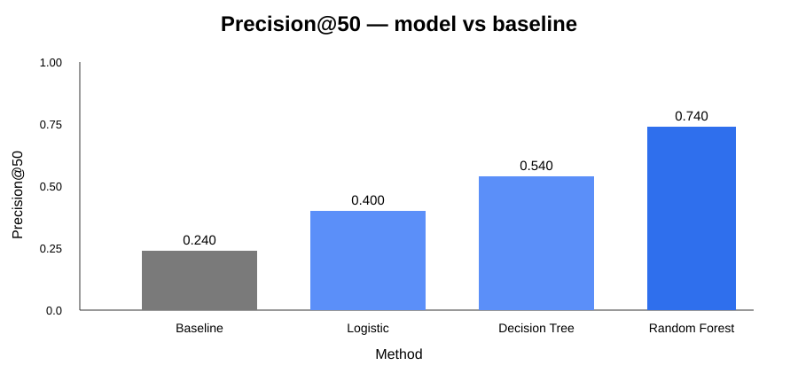
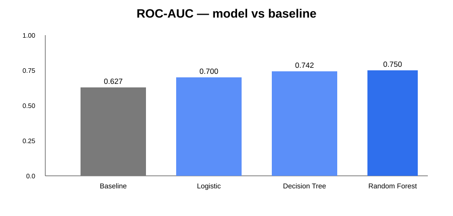
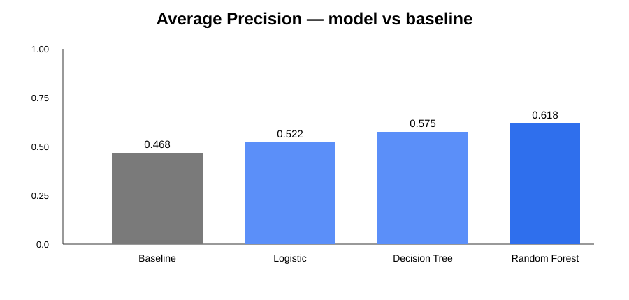

Abstract
This study asks which existing content items should be reviewed first for refresh, expansion, protection, pruning, or monitoring. The analysis uses the public-safe anonymized FlyRank internship starter release, containing 30,000 content-item rows from 32 pseudonymized clients with trailing-90-day metrics. Logistic Regression, Decision Tree, and Random Forest models are compared with a transparent rule-based baseline using client-aware validation when supported and the same evaluation split for comparison. In the documented starter results, Random Forest produced ROC-AUC 0.750, Average Precision 0.618, and Precision@50 0.740, compared with 0.627, 0.468, and 0.240 for the baseline. The resulting score is intended to order items for human review and decision support, not to guarantee that a refresh will improve future performance.
1. Introduction / Problem statement
FlyRank's content-focused problem is a prioritization problem: a content team may have many existing items to review while review capacity is limited. This case study asks how observed search visibility, freshness, content depth, engagement, and traffic signals can be combined into a practical queue for deciding which existing content items should be inspected first for refresh, expansion, protection, pruning, or monitoring.
The ML task is classification followed by ranking. The target is is_declining_label, a public-safe proxy derived from observed trend direction. The output is a model probability combined with a transparent baseline score to prioritize review.
2. Data
Source/release: the FlyRank ML Internship starter dataset in the repository, data/raw/content_refresh_anonymized.csv. It contains 30,000 rows × 44 source columns, 32 pseudonymized clients, one row per pseudonymized content item, and trailing-90-day metrics. The starter slice is the actual data used for this analysis; the gated ~79M-row warehouse release was not required for this capstone analysis.
Time window: each content row summarizes a trailing 90-day performance window. Content age was also used as an eligibility condition so that very new items were not treated as refresh candidates.
Filtering/exclusions: items were restricted to impressions_90d > 0 and content_age_days >= 90, then deduplicated by content_id. The first filter removes items with no observed search visibility in the window; the age filter avoids treating very new content as mature refresh candidates; deduplication keeps one content item per identifier. content_id and client_id are pseudonyms used for grouping, joining, and validation only, never as model features.
Leakage/public-safety rules: is_declining_label is derived from trend_direction, which is computed from trend_pct; therefore trend_direction and trend_pct are excluded from the feature matrix. No client names, private queries, titles, domains, or credentials are used in the paper.
3. Methodology
The workflow compares a transparent rule-based baseline with Logistic Regression, a constrained Decision Tree, and Random Forest. Features cover observed performance, freshness, content attributes, visibility, traffic, and selected categorical fields. Numeric and categorical features are prepared consistently and the target is kept separate from trend-derived leakage fields.
Where the data supports it, validation holds out clients so that content from the same client is not split across train and test. If the available slice cannot support a client-aware split, the workflow falls back to a stratified row split. All methods are evaluated on the same test split. Metrics include Precision@20, Precision@50, Precision@100, ROC-AUC, and Average Precision.
The final review score combines the selected model probability with the normalized transparent baseline score. The queue is a ranking signal for human review, not an automated content-change decision.
4. Results
| Method | Precision@50 | ROC-AUC | Average Precision |
|---|---|---|---|
| Rule-based baseline | 0.240 | 0.627 | 0.468 |
| Logistic Regression | 0.400 | 0.700 | 0.522 |
| Decision Tree | 0.540 | 0.742 | 0.575 |
| Random Forest | 0.740 | 0.750 | 0.618 |



Using the repository's documented selection rule, Precision@50 is the primary comparison metric, with Average Precision and ROC-AUC as supporting measures. The Random Forest output is therefore used as the selected ranking signal in this analysis.
5. Limitations & honest framing
- The target is a proxy for observed decline, not future refresh success.
- The analysis is predictive and does not establish causal impact from any content intervention.
- The starter dataset is a 30,000-row anonymized slice, not the full warehouse, so coverage is limited.
- The trailing-90-day window can reflect seasonality and changing search behavior.
- Validation reduces some leakage risk but does not reproduce every future deployment condition.
- Human review is required before refresh, expansion, protection, pruning, or monitoring decisions.
- A high score means higher review priority under this workflow; it is not a guarantee of an outcome.
6. Ranked recommendations
The ranked queue is an action-oriented review order. Each item should be inspected by a person before an intervention is chosen.
- Review high-confidence decline-risk items first. Check whether the model signal is supported by meaningful visibility and recent performance evidence.
- Inspect visible pages with weak click-through signals. Review whether title, snippet, intent match, or positioning warrants investigation.
- Inspect weak engagement or scroll signals. Review content depth, clarity, and user experience before choosing an action.
- Inspect stale content that still has visibility. Compare current intent and content quality before deciding whether to refresh, expand, protect, prune, or monitor.
These are decision-support recommendations derived from observed signals. They should be checked against the current page, intent, context, and business relevance.
7. Reproducibility
Repository · Capstone notebook · Open notebook in Colab
Run work/notebooks/capstone.ipynb from the repository workflow. The notebook uses the feature-preparation, baseline, training, and evaluation scripts and writes artifacts under outputs/. Fixed random seeds are used where applicable, and the notebook documents the target, feature exclusions, leakage checks, validation design, and metrics.
8. Artifacts
The paper includes the measured model-comparison charts. The repository also contains the capstone notebook, model report, refresh-queue sample, feature/baseline/training/evaluation scripts, and other analysis materials.
9. Acknowledgments & data credit
Built on the FlyRank ML Internship dataset. This capstone was completed as part of the FlyRank ML Internship using the public-safe anonymized starter dataset and internship repository materials.